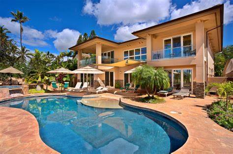

"Tendulkar" redirects here. For other people with the same surname, see Tendulkar (surname).
Bharat Ratna
Sachin Tendulkar
Sachin-Tendulkar.jpg
Tendulkar in 2017
Personal information
Full name
Sachin Ramesh Tendulkar
Born 24 April 1973 (age 50)
Bombay, Maharashtra, India
(now Mumbai, India)
Nickname
Little MasterMaster Blaster
[1][2]
Height 165 cm (5 ft 5 in)
Batting Right-handed
Bowling
Right-arm leg break
Right-arm off break
Role Batter
Relations
Arjun Tendulkar (son)
Ramesh Tendulkar (father)
Website sachintendulkar.com
International information
National side Bowling
Right-arm leg break
Right-arm off break
Role Batter
Relations
Arjun Tendulkar (son)
Ramesh Tendulkar (father)
Website sachintendulkar.com
International information
National side
India (1989–2013)
India (1989–2013)
Test debut (cap 187) 15 November 1989 v Pakistan
Last Test 14 November 2013 v West Indies
ODI debut (cap 74) 18 December 1989 v Pakistan
Last ODI 18 March 2012 v Pakistan
ODI shirt no. 10 (formerly 99, 33)
Only T20I (cap 11) 1 December 2006 v South Africa
Domestic team information
Years TeamBowling
Right-arm leg break
Right-arm off break
Role Batter
Relations
Arjun Tendulkar (son)
Ramesh Tendulkar (father)
Website sachintendulkar.com
Internatio
1988–2013 Mumbai
1992 Yorkshire
1994 East Bengal[3]
2008–2013 Mumbai Indians (squad no. 10)
Career statistics
Competition Test ODI FC LA
Matches 200 463 310 551
Runs scored 15,921 18,426 25,396 21,999
Batting average 53.78 44.83 57.84 45.54
100s/50s 51/68 49/96 81/116 60/114
Top score 248* 200* 248* 200*
Balls bowled 4,240 8,054 7,605 10,230
Wickets 46 154 71 201
HASH BLOCK PROJECTS